4 Validasi dan Visualisasi Data
4.1 Tugas Validasi Data
- Periksa/Nilai Kualitas Data
- Periksa/Nilai Tingkat Kecukupan Data
- Periksa/Nilai Kesesuaian Data
- Periksa/Nilai Konsistensi Data
4.2 Manfaat Validasi Data
- Tidak merusak perhitungan pada tahapan selanjutnya.
- Memvisualisasikan sebaran data, mendeteksi pola, dan mengidentifikasi anomali.
- Membantu menjelaskan dan mengkomunikasikan hasil analisis dengan lebih jelas.
4.3 Laporan Dokumentasi Data Validasi
Laporan dokumentasi data validasi, setidaknya memiliki parameter berikut:
- Kebenaran, misal di Indonesia isian Gender yang diakui hanya 2 P/W; Agama hanya 6 (Islam, Protestan, Katholik, Hindu, Budha, Konghucu)
- Kelengkapan, misal data provinsi seluruh Indonesia (34 prov), namun hanya sebagian yg ada.
- Konsistensi, misal penulisan STM atau SMK;
4.4 Validasi vs Verifikasi
- Validasi: memastikan bahwa data yang diinputkan sesuai dengan ketentuan yang berlaku.
- Verifikasi: memastikan bahwa data yang diinputkan sesuai dengan data yang ada.
4.5 Tahapan kritikal dalam validasi
- Tipe Data (integer, float, string)
- Ekspresi Konsisten (mis. Jalan, Jl., Jln.)
- Format Data (mis. utk tgl “YYYY-MM-DD” vs “DD-MM-YYYY.”)
- Nilai Null/Missing Values
- Misspelling/Type
- Invalid Data (gender: L/P: L; Laki-laki; P: Pria/Perempuan? )
4.6 Teknik Validasi Data
- Manual: melihat data secara langsung, misalnya melihat data di Excel.
- Statistik: menggunakan statistik deskriptif, misalnya melihat jumlah data, nilai maksimum, nilai minimum, dan lain-lain.
- Visualisasi: menggunakan visualisasi data, misalnya melihat sebaran data menggunakan histogram, boxplot, dan lain-lain.
4.7 Validasi Dengan Pandas
import pandas as pd
from sklearn.datasets import load_iris
# Load dataset Iris
iris = load_iris()
X = iris.data
y = iris.target
# Buat DataFrame
df = pd.DataFrame(data=X, columns=[f'feature_{i}' for i in range(X.shape[1])])
df['target'] = y
# rename dataframe column
df = df.rename(columns={'feature_0':'Sepal Length','feature_1':'Sepal Width','feature_2':'Petal Length','feature_3':'Petal Width'})
# untuk menampilkan 5 data teratas
print(df.head())
# untuk menampilkan informasi dataset
print(df.info())
# untuk menampilkan statistik deskriptif dataset
print(df.describe())
# untuk menampilkan jumlah data null pada dataset
print(df.isnull().sum())Method
head()dapat digunakan untuk melihat tampilan 5 data teratas dalam dataset.Method
info()dapat digunakan untuk melihat informasi data frame, seperti jumlah baris, kolom, nilai non-NULL, tipe data, dan total penggunaan memori. Method ini sangat berguna dalam melakukan validasi tahap awal pada data.Method
describe()digunakan untuk menampilkan statistik deskriptif dari dataset seperti max , min , count , std dan lain lain.Method
isnull().sum()berfungsi untuk menghitung jumlah data kosong dalam sebuah dataset.
4.8 Visualisasi Data
- Visualisasi data dapat membantu dalam memvalidasi data.
- Memvisualisasikan sebaran data, mendeteksi pola, dan mengidentifikasi anomali.
- Visualisasi yang baik dapat menceritakan sebuah cerita tentang data Anda dengan cara yang tidak dapat dilakukan oleh sebuah kalimat.
4.8.1 Library Visualisasi Data
Terdapat dua library populer untuk visualisasi data di Python, yaitu:
- Matplotlib: library yang paling populer untuk visualisasi data di Python. Umumnya diberi alias
plt.

- Seaborn: library yang dibangun di atas Matplotlib, sehingga memiliki sintaks yang mirip. Umumnya diberi alias
sns.

4.8.2 Jenis Visualisasi Data
- Perbandingan (Comparison)
Bar Chart
- Deskripsi: Bar chart menunjukkan data dalam bentuk batang vertikal atau horizontal, di mana panjang batang mewakili nilai data.
- Penggunaan: Cocok untuk membandingkan nilai antara kategori atau menunjukkan perubahan nilai dari waktu ke waktu.
Line Chart
- Deskripsi: Line chart menunjukkan data sebagai garis yang menghubungkan titik data. Digunakan untuk menyoroti tren atau perubahan sepanjang waktu.
- Penggunaan: Ideal untuk melihat perubahan nilai seiring waktu atau mengidentifikasi pola tren.
Combo Chart
- Deskripsi: Combo chart menggabungkan dua jenis chart atau lebih dalam satu tampilan, seperti bar chart dan line chart.
- Penggunaan: Berguna untuk menyajikan data yang memiliki skala atau satuan yang berbeda dalam satu tampilan. Misalnya, pendapatan (bar) dan persentase pertumbuhan (line).
Hands On Coding
import matplotlib.pyplot as plt import pandas as pd from sklearn.datasets import load_iris # Load dataset Iris iris = load_iris() X = iris.data y = iris.target # Buat DataFrame df = pd.DataFrame(data=X, columns=[f'feature_{i}' for i in range(X.shape[1])]) df['target'] = y # Rename DataFrame Column df = df.rename(columns={'feature_0':'Sepal Length','feature_1':'Sepal Width','feature_2':'Petal Length','feature_3':'Petal Width'}) # Bar Chart untuk nilai rata-rata setiap fitur berdasarkan target mean_values = df.groupby('target').mean() bar_chart = mean_values.plot(kind='bar', figsize=(10, 6), colormap='viridis') bar_chart.set_ylabel('Rata-rata Nilai Fitur') bar_chart.set_xlabel('Kategori Target') bar_chart.set_title('Bar Chart: Rata-rata Nilai Fitur berdasarkan Target') plt.show() # Line Chart untuk nilai rata-rata setiap fitur line_chart = mean_values.T.plot(kind='line', marker='o', figsize=(10, 6), colormap='viridis') line_chart.set_ylabel('Rata-rata Nilai Fitur') line_chart.set_xlabel('Fitur') line_chart.set_title('Line Chart: Rata-rata Nilai Fitur') plt.show() # Combo Chart: Kombinasi Bar dan Line Chart fig, ax1 = plt.subplots(figsize=(8, 6)) # Bar Chart pada sumbu kiri color = 'tab:blue' ax1.set_xlabel('Kategori Target') ax1.set_ylabel('Rata-rata Nilai Fitur', color=color) bar_chart_combo = mean_values.plot(kind='bar', ax=ax1, colormap='viridis') ax1.tick_params(axis='y', labelcolor=color) # Line Chart pada sumbu kanan ax2 = ax1.twinx() color = 'tab:red' ax2.set_ylabel('Rata-rata Nilai Fitur', color=color) line_chart_combo = mean_values.T.plot(kind='line', marker='o', ax=ax2, color=color) ax2.tick_params(axis='y', labelcolor=color) # Judul dan tampilan grafik fig.suptitle('Combo Chart: Kombinasi Bar dan Line Chart', fontsize=16) plt.show()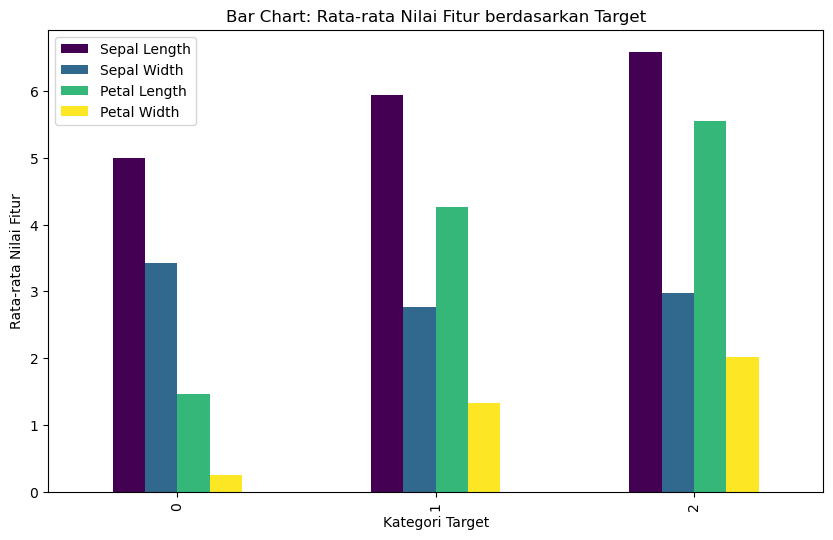 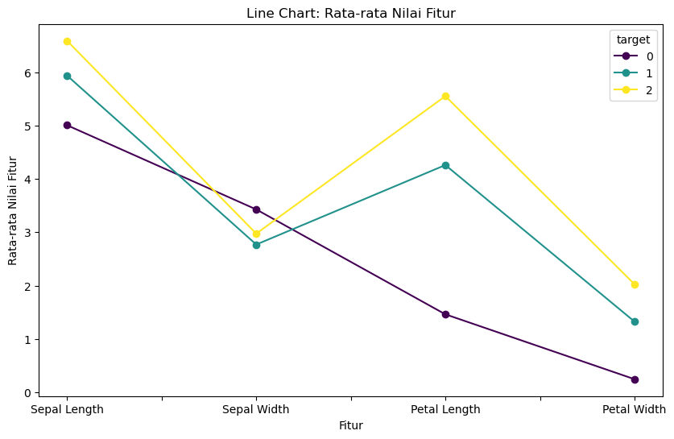 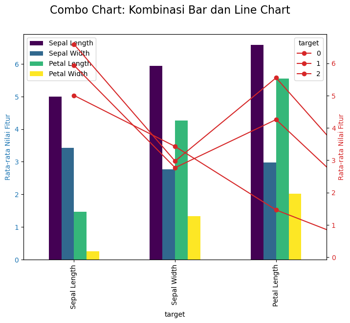
- Komposisi (Composition)
Pie Chart
- Deskripsi: Pie chart menggambarkan data dalam bentuk lingkaran yang terbagi menjadi sejumlah “potongan” (slices) yang mewakili proporsi relatif dari keseluruhan.
- Penggunaan: Cocok untuk menunjukkan perbandingan proporsi atau persentase dari satu keseluruhan. Contohnya, pangsa pasar dari beberapa produk.
Stacked Bar Chart
- Deskripsi: Stacked bar chart menunjukkan data dalam bentuk batang vertikal atau horizontal yang bertumpuk, dengan setiap tumpukan mewakili kategori atau sub-kategori.
- Penggunaan: Berguna untuk menunjukkan kontribusi masing-masing bagian terhadap keseluruhan. Contohnya, penjualan bulanan per produk yang dibagi berdasarkan wilayah.
Treemap
- Deskripsi: Treemap menggambarkan data hierarkis dalam bentuk kotak-kotak yang berukuran berdasarkan nilai atau ukuran masing-masing kategori.
- Penggunaan: Ideal untuk menunjukkan struktur hierarki dan membandingkan proporsi relatif di dalamnya. Misalnya, pengeluaran anggaran departemen dalam sebuah perusahaan.
Waterfall Chart
- Deskripsi: Waterfall chart digunakan untuk mengilustrasikan perubahan kumulatif dari suatu nilai, dengan batang yang naik atau turun mewakili kontribusi positif atau negatif.
- Penggunaan: Berguna untuk melihat kontribusi sepanjang suatu proses atau mengidentifikasi faktor-faktor yang mempengaruhi perubahan nilai. Contohnya, perubahan laba bersih dari satu periode ke periode berikutnya.
Hands On Coding
pip install squarify import matplotlib.pyplot as plt import squarify import pandas as pd from sklearn.datasets import load_iris # Load dataset Iris iris = load_iris() X = iris.data y = iris.target # Buat DataFrame df = pd.DataFrame(data=X, columns=[f'feature_{i}' for i in range(X.shape[1])]) df['target'] = y # Rename columns df = df.rename(columns={'feature_0':'Sepal Length','feature_1':'Sepal Width','feature_2':'Petal Length','feature_3':'Petal Width'}) # Pie Chart untuk proporsi kategori target target_counts = df['target'].value_counts() labels = [f'Kategori {i}' for i in target_counts.index] colors = ['gold', 'lightcoral', 'lightskyblue'] plt.figure(figsize=(5, 5)) plt.pie(target_counts, labels=labels, colors=colors, autopct='%1.1f%%', startangle=140) plt.title('Pie Chart: Proporsi Kategori Target') plt.show() # Stacked Bar Chart untuk distribusi nilai fitur berdasarkan kategori target stacked_bar_chart = df.groupby('target').mean().T.plot(kind='bar', stacked=True, figsize=(10, 6), colormap='viridis') stacked_bar_chart.set_ylabel('Nilai Fitur') stacked_bar_chart.set_xlabel('Fitur') stacked_bar_chart.set_title('Stacked Bar Chart: Distribusi Nilai Fitur berdasarkan Kategori Target') plt.show() # Treemap untuk proporsi kategori target plt.figure(figsize=(10, 6)) squarify.plot(sizes=target_counts, label=labels, color=colors, alpha=0.7) plt.title('Treemap: Proporsi Kategori Target') plt.axis('off') plt.show() # Waterfall Chart untuk melihat kontribusi setiap fitur terhadap total waterfall_data = df.drop('target', axis=1).sum() waterfall_chart = waterfall_data.plot(kind='bar', figsize=(10, 6), colormap='viridis') waterfall_chart.set_ylabel('Nilai Fitur') waterfall_chart.set_xlabel('Fitur') waterfall_chart.set_title('Waterfall Chart: Kontribusi Fitur terhadap Total') plt.show()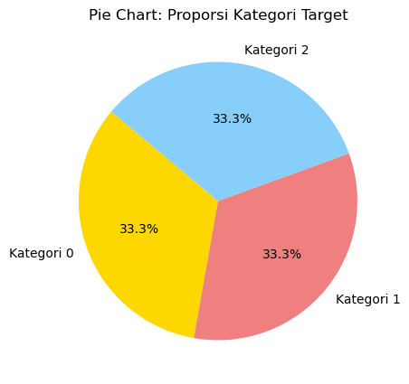 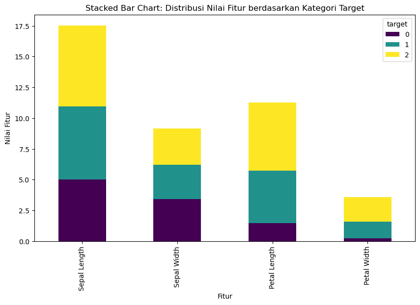 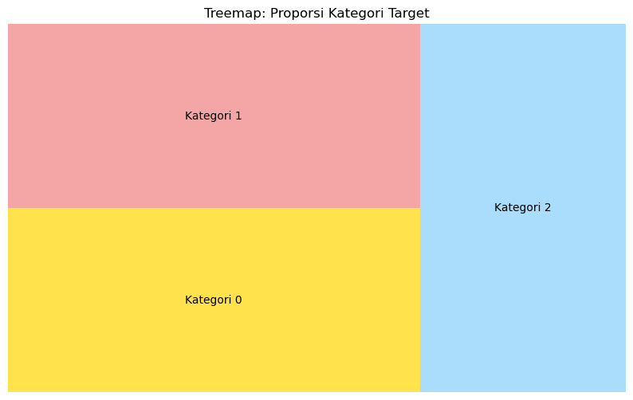 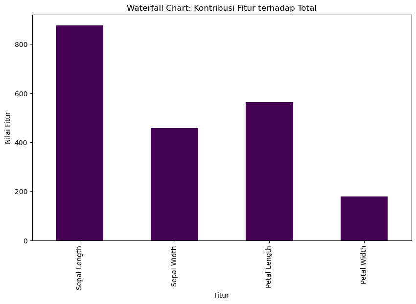
- Distribusi (Distribution)
Histogram
- Deskripsi: Histogram adalah grafik batang yang menunjukkan distribusi frekuensi dari suatu data numerik. Batang-batang tersebut mewakili rentang nilai dan tingginya sesuai dengan frekuensinya.
- Penggunaan: Cocok untuk menunjukkan distribusi dan pola data. Biasanya digunakan untuk melihat apakah data memiliki kecenderungan tertentu, seperti distribusi normal atau skewness.
Box Plot
- Deskripsi: Box plot menggambarkan statistik ringkasan seperti kuartil, median, dan rentang dalam bentuk diagram. Garis di dalam kotak mewakili median, dan batas kotak menunjukkan kuartil pertama (Q1) dan kuartil ketiga (Q3).
- Penggunaan: Berguna untuk melihat distribusi dan variabilitas data. Box plot membantu mengidentifikasi pencilan (outliers) dan memberikan gambaran ringkas tentang statistik deskriptif.
Violin Plot
- Deskripsi: Violin plot adalah kombinasi antara box plot dan kernel density plot. Ini menunjukkan distribusi data dengan cara yang mirip dengan histogram, tetapi dalam bentuk lebih halus.
- Penggunaan: Ideal untuk melihat distribusi dan kepadatan data. Violin plot dapat memberikan informasi lebih rinci tentang bentuk distribusi, serta menunjukkan kepadatan pada berbagai nilai.
Hands On Coding
import matplotlib.pyplot as plt import seaborn as sns import pandas as pd from sklearn.datasets import load_iris # Load dataset Iris iris = load_iris() X = iris.data y = iris.target # Buat DataFrame df = pd.DataFrame(data=X, columns=[f'feature_{i}' for i in range(X.shape[1])]) df['target'] = y # Rename columns df = df.rename(columns={'feature_0':'Sepal Length','feature_1':'Sepal Width','feature_2':'Petal Length','feature_3':'Petal Width'}) # Histogram untuk distribusi nilai fitur plt.figure(figsize=(12, 6)) for i, feature in enumerate(df.columns[:-1]): plt.subplot(2, 2, i + 1) sns.histplot(df[feature], kde=True, color='skyblue') plt.title(f'Histogram: {feature}') plt.tight_layout() plt.show() # Box Plot untuk melihat distribusi dan outlier plt.figure(figsize=(12, 6)) for i, feature in enumerate(df.columns[:-1]): plt.subplot(2, 2, i + 1) sns.boxplot(x='target', y=feature, data=df, palette='viridis') plt.title(f'Box Plot: {feature}') plt.tight_layout() plt.show() # Violin Plot untuk kombinasi histogram dan kernel density estimate (KDE) plt.figure(figsize=(12, 6)) for i, feature in enumerate(df.columns[:-1]): plt.subplot(2, 2, i + 1) sns.violinplot(x='target', y=feature, data=df, palette='viridis', inner='quartile') plt.title(f'Violin Plot: {feature}') plt.tight_layout() plt.show()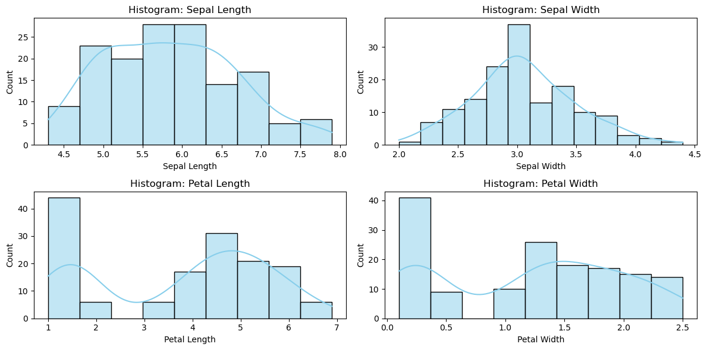 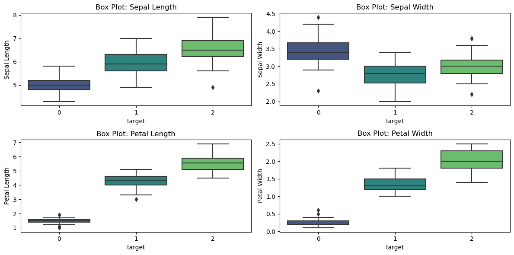 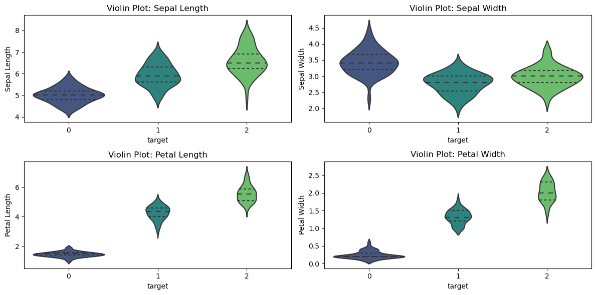
- Hubungan (Relationship)
Scatter Plot
- Deskripsi: Scatter plot menunjukkan hubungan antara dua variabel numerik dengan menempatkan titik-titik pada bidang kartesian. Setiap titik mewakili satu pengamatan atau data point.
- Penggunaan: Cocok untuk menemukan pola atau hubungan antara dua variabel. Misalnya, hubungan antara waktu studi dan nilai ujian.
Bubble Chart
- Deskripsi: Sama seperti scatter plot, tetapi dengan tambahan dimensi ketiga yang direpresentasikan oleh ukuran gelembung (bubble). Ukuran gelembung mencerminkan nilai dari variabel ketiga.
- Penggunaan: Berguna untuk menunjukkan hubungan tiga variabel sekaligus. Contohnya, scatter plot yang menunjukkan hubungan antara waktu studi dan nilai ujian, dengan ukuran gelembung mencerminkan jumlah jam belajar.
Heatmap
- Deskripsi: Heatmap adalah representasi visual dari data dalam bentuk matriks di mana warna mewakili nilai masing-masing sel. Digunakan terutama untuk menunjukkan pola dalam data besar.
- Penggunaan: Cocok untuk menemukan pola atau relasi dalam data matriks. Misalnya, heatmap dapat digunakan untuk menunjukkan korelasi antara berbagai variabel atau untuk visualisasi data spasial.
Hands On Coding
import matplotlib.pyplot as plt import seaborn as sns import pandas as pd from sklearn.datasets import load_iris # Load dataset Iris iris = load_iris() X = iris.data y = iris.target # Buat DataFrame df = pd.DataFrame(data=X, columns=[f'feature_{i}' for i in range(X.shape[1])]) df['target'] = y # Rename columns df = df.rename(columns={'feature_0':'Sepal Length','feature_1':'Sepal Width','feature_2':'Petal Length','feature_3':'Petal Width'}) # Scatter Plot untuk melihat hubungan antara dua fitur plt.figure(figsize=(12, 6)) sns.scatterplot(x='Sepal Length', y='Sepal Width', hue='target', data=df, palette='viridis', s=80) plt.title('Scatter Plot: Hubungan antara Sepal Length dan Sepal Width') plt.show() # Bubble Chart untuk menambah dimensi ketiga (ukuran marker) pada scatter plot plt.figure(figsize=(12, 6)) sns.scatterplot(x='Sepal Length', y='Sepal Width', hue='target', size='Petal Length', sizes=(20, 200), data=df, palette='viridis') plt.title('Bubble Chart: Hubungan antara Sepal Length, Sepal Width, dan Petal Length') plt.show() # Heatmap untuk melihat korelasi antara seluruh fitur correlation_matrix = df.drop('target', axis=1).corr() plt.figure(figsize=(6, 4)) sns.heatmap(correlation_matrix, annot=True, cmap='viridis', linewidths=.5) plt.title('Heatmap: Korelasi antara Seluruh Fitur') plt.show()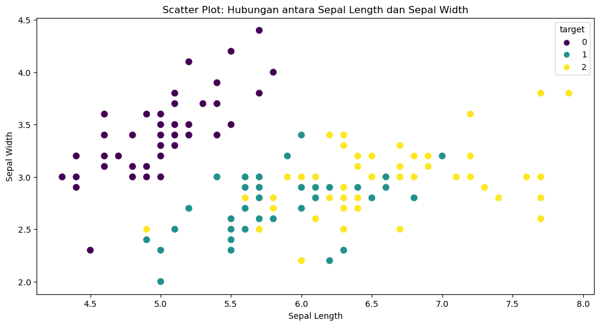 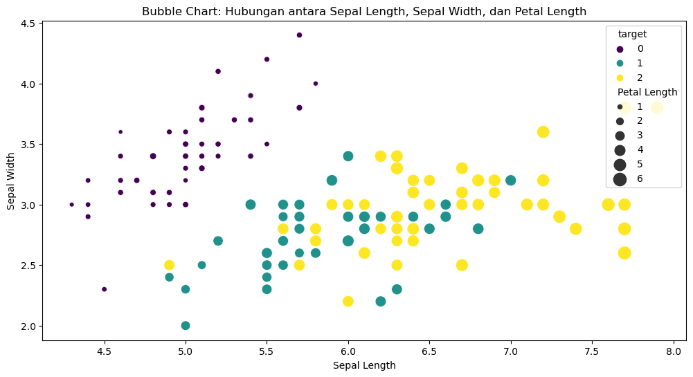 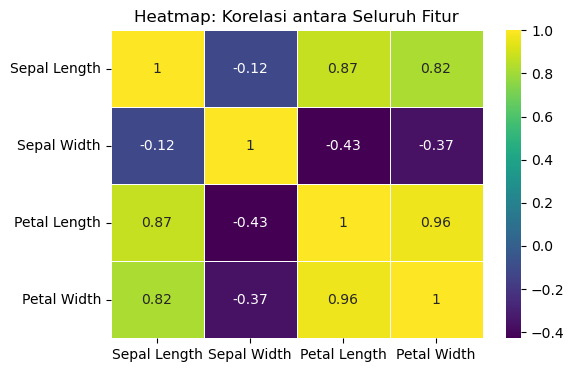